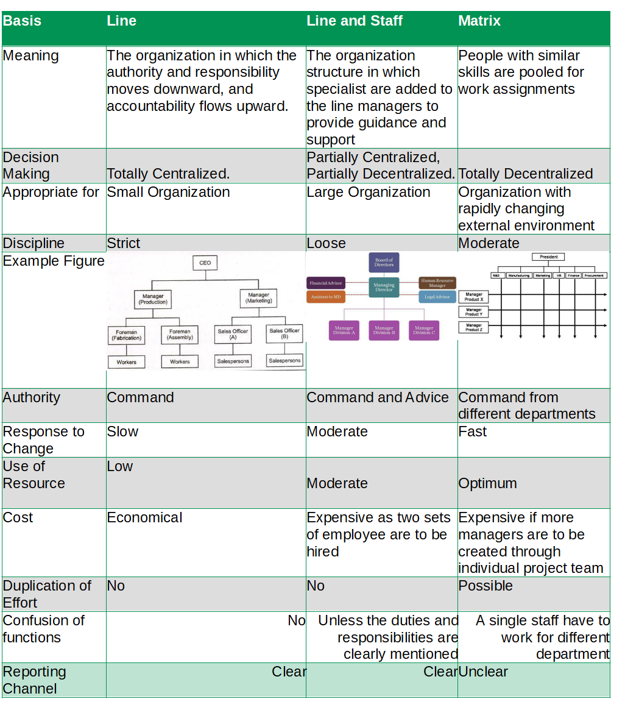

The main difference between Line and Staff Organization is the presence of Staff position in the Line and Staff Organization. A staff position is intended to provide expertise, advice and support for line positions. Staff functions contribute indirectly to goal accomplishment.
| Basis | Line | Line and Staff | Matrix |
| Meaning | The organization in which the authority and responsibility moves downward, and accountability flows upward. | The organization structure in which specialist are added to the line managers to provide guidance and support | People with similar skills are pooled for work assignments |
| Decision Making | Totally Centralized | Partially Centralized | Totally Decentralized |
| Appropriate for | Small Organization | Large Organization | Organization with rapidly changing external environment |
| Discipline | Strict | Loose | Moderate |
| Authority | Command | Command and Advice | Command from different departments |
| Response to Change | Slow | Moderate | Fast |
| Use of Resource | Low | Moderate | Optimum |
| Cost | Economical | Expensive as two sets of employee are to be hired | Expensive if more managers are to be created through individual project team |
| Duplication of Effort | No | No | Possible |
| Confusion of functions | No | Unless the duties and responsibilities are clearly mentioned | A single staff have to work for different department |
| Reporting Channel | Clear | Clear | Unclear |
Difference Between Line and Line and Staff Organization on the basis of Meaning
The organization in which the authority and responsibility moves downward, and accountability flows upward is called Line Organization whereas The organization structure in which specialist are added to the line managers to provide guidance and support is Line and Staff Organization.
Difference Between Line and Line and Staff Organization on the basis of Decision Making
Decision Making is totally centralized in Line organization whereas In Line and Staff Organization Decision Making is Partially Centralized.
Difference Between Line and Line and Staff Organization on the basis of Appropriate for
Line organization is appropriate for Small Organization whereas Line and Staff Organization is appropriate for Large Organization.
Difference Between Line and Line and Staff Organization on the basis of Authority
In Line organization Authority flows as command only whereas in Line and Staff Organization Authority flowas as Command + Advice.
Difference Between Line and Line and Staff Organization on the basis of Use of Resource
Use of resource is very low in Line organization whereas use of resource is Optimum in Line and Staff Organization.
Line Organization
Line organization is the oldest form of organization. There is direct and fixed line of authority between superior and subordinate. Authority flows from top to down in the organizational hierarchy. It entitles a manager to direct the work of subordinates. One employee has only one boss.
Line and Staff Organization
Line and staff organization is characterized by both line and staff position. A line portion is a position in the direct chain of command that is responsible for the achievement of an organization‘s goal. Line functions directly contribute to goal accomplishment. It contains the power to make and execute decision. A staff position is intended to provide expertise, advice and support for line positions. Staff functions contribute indirectly to goal accomplishment.